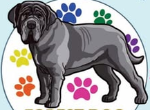

Descanso cómodo
Cuartos cómodos con aire acondicionado para que pueda relajarse entre sus actividades.

forest dog spa Consultar por WhatsApp ↗Cuando necesitas salir, tu compañero puede quedarse en Forest Dog con espacios cómodos, convivencia, paseos y momentos de descanso. Durante su estancia recibes fotos para acompañarlo a la distancia.

La estancia combina descanso en cuartos cómodos con momentos de convivencia, juegos y paseos. La página principal también menciona días de alberca; confirma disponibilidad y detalles al planear la visita.
Cuartos cómodos con aire acondicionado para que pueda relajarse entre sus actividades.
Convivencia, juegos y paseos alternados con tiempo para descansar.
Recibe fotografías mientras está hospedado y pregunta al equipo cómo va su compañero.
El volante de Forest Dog anuncia pensión en $200. Confirma directamente duración, fechas, disponibilidad y qué incluye la tarifa.
Confirmar tarifa ↗Precio anunciado en el volante compartido por Forest Dog. Pregunta si hay tarifas distintas según las fechas o necesidades de tu mascota.
Para darte una cotización precisa, comparte las fechas y cuéntanos sobre su rutina. El equipo podrá indicarte los requisitos vigentes y qué conviene llevar.
Indica cuándo llegaría y cuándo planeas recogerlo para revisar disponibilidad.
Cuéntanos cómo se lleva con otros perros, qué horarios suele tener y qué necesita para descansar.
Consulta qué documentos y objetos personales se solicitan antes de preparar su maleta.
Escríbenos para confirmar cupo, requisitos, precio y disponibilidad de las actividades.